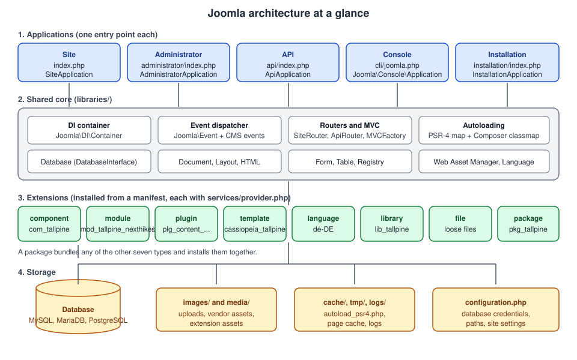

Joomla Introduction and Architecture
|
This content was generated with the assistance of AI and should be verified against the official documentation before being relied on in production. |
This page is the map of the whole Joomla sub-section. It explains what Joomla is, where it comes from, which programs
make up a Joomla installation, what happens between an HTTP request and the HTML that comes back, and which building
blocks (extensions, namespaces, the dependency injection container, events and MVC) every later page assumes. It was
checked against the official documentation on 2026-10-30. The code and file names refer to Joomla 6.2 (the current
release, requiring PHP 8.3 or newer; the entry points in the 6.2 source define JOOMLA_MINIMUM_PHP as 8.3.0), and
the text says where Joomla 5.4 (security fixes only) behaves differently. Joomla 4.x and 3.x are end of life.
The examples belong to the Tallpine Hiking Club, a fictitious mountain club whose site grows throughout the
sub-section: the package pkg_tallpine holds the component com_tallpine (namespace Tallpine\Component\Tallpine),
the module mod_tallpine_nexthikes, several plugins and the child template cassiopeia_tallpine. Release dates and
support windows are covered in Versions, Release Cycle and Support,
so this page only places the major versions on a timeline.
What Joomla is
Joomla is a free, open source content management system written in PHP. It stores its data in a relational database (MySQL, MariaDB or PostgreSQL) and renders pages from templates. A fresh installation already contains the tools of a publishing site: articles in nested categories, menus, modules, users with groups and access levels, multilingual content, custom fields, tags, contacts, banners, news feeds, a media manager, Smart Search, scheduled tasks, a web services API and a command line interface. Everything beyond that is added with extensions.
Four groups of people use it, and this sub-section addresses each:
-
Editors and site builders create content, menus and modules in the Administrator and rarely read PHP.
-
Administrators install, update, secure and back up the site.
-
Template designers write or override layouts, CSS and JavaScript for the Site application.
-
Extension developers write components, modules, plugins and templates against the APIs described below.
Licence, Open Source Matters and the community
Joomla is licensed under the GNU General Public License, version 2 or later. The entry-point files in the source tree carry the notice "GNU General Public License version 2 or later" and the copyright of Open Source Matters, Inc. In practice this means:
-
You may use, modify and redistribute Joomla and run it commercially.
-
A distributed extension that links to Joomla’s PHP code is normally treated as a derivative work and is therefore also released under the GPL. Selling a GPL extension is allowed, and many commercial extension vendors do so; the restriction is on the source code, not on charging for support, updates or downloads.
-
The Joomla name and logo are trademarks of Open Source Matters, so this documentation does not reproduce the logo.
Open Source Matters, Inc. (OSM) is the non-profit organisation that provides the legal, organisational and financial resources of the project. It holds the trademarks and the project’s assets. The software itself is written by volunteers organised in teams, and the project is also supported by a large community of extension developers, translators, user group organisers and the people who run the events and the official magazine. The official documentation is now published in two places: the Joomla! User Guide (guide.joomla.org) for end users and the Joomla! Developer Manual (manual.joomla.org) for developers. The old wiki at docs.joomla.org is a legacy resource whose pages mark themselves obsolete, and several Manual pages (the lifecycle page, for example) are still stubs, so this page also reads the source tree on GitHub where the Manual says nothing.
Joomla has no built-in backup system and no built-in multisite mode. Backup extensions such as Akeeba Backup are third-party and belong to the ecosystem rather than to the core; see Backups and Recovery.
A short history
Joomla started as a fork of Mambo in August 2005, after the developers objected to the foundation structure set up by the company that owned the Mambo trademark. The name "Joomla!" is an English spelling of the Swahili word jumla, roughly "all together". The table lists the milestones that still matter for reading older material.
| Version | Released | What changed |
|---|---|---|
1.0 |
September 2005 |
The first Joomla release, a rebranded Mambo 4.5.2.3. |
1.5 |
January 2008 |
A rewrite on a new framework with a real MVC layer, language packs and a proper extension API. Many tutorials with |
2.5 |
January 2012 |
A long-term support release of the 1.x line, after which the project moved to a predictable cycle. |
3.0 |
September 2012 |
Responsive back end built on Bootstrap and jQuery, followed by years of 3.x releases. Namespacing of core classes started gradually inside 3.x. |
4.0 |
August 2021 |
A deep rewrite: namespaced PSR-4 classes, a dependency injection container, event dispatching based on the Joomla Framework, Bootstrap 5, the Atum administrator template and the Cassiopeia site template, the Web Asset Manager and the Web Services API. |
5.0 |
October 2023 |
A cleanup release on a newer PHP baseline: concrete event classes, removal of the ES5 assets and of the reCAPTCHA plugin, and the start of the 5.x line that ends with the bridge release 5.4. |
6.0 |
October 2025 |
Removes code deprecated in 4.x and 5.x, with most removals still reachable through the Behaviour - Backward Compatibility 6 plugin (BC6), and requires PHP 8.3. |
6.2 |
October 2026 |
The current release at the check date. |
Between those majors, 4.1 added child templates and scheduled tasks, and 4.2 introduced multi-factor authentication (MFA), which replaced the older two-factor authentication. Joomla 5.1 added signature verification of core updates with TUF, and Joomla 5.4 and 6.0 added Automated Core Updates. Version policies (a major every two years in October of odd years, four minors per major, x.4 as the bridge release) are explained in Versions, Release Cycle and Support.
The big picture
A Joomla installation is a single code tree that contains five independent programs, the applications. They share the framework libraries, the dependency injection container, the event dispatcher and the database, and they differ in how a request reaches them and in what they do with it. Extensions of eight types plug into the applications. The figure shows the layers that the rest of the page walks through.

The five applications
Each application has its own entry point and its own class. All of them extend from the Joomla Framework application classes and read their services from the same container.
| Application | Entry point | Class | Purpose |
|---|---|---|---|
Site |
|
|
The public front end. Visitors, members and the template-rendered pages. |
Administrator |
|
|
The back end, rendered with the Atum template. |
API |
|
|
The Web Services API, answering in JSON:API and returning JSON, authenticated with tokens or Basic authentication. |
Console |
|
|
The command line application, started with |
Installation |
|
|
The web installer. The |
How an entry point starts an application
The web entry points are very short. They check the PHP version, define the guard constant _JEXEC and load
includes/app.php of their own application. In the Site application that file does the following (the code below is
shortened from the Joomla 6.2 source):
<?php
\defined('_JEXEC') or die;
$startTime = microtime(1);
$startMem = memory_get_usage();
require_once __DIR__ . '/defines.php';
require_once JPATH_BASE . '/includes/framework.php';
$container = \Joomla\CMS\Factory::getContainer();
// session aliases omitted
$app = $container->get(\Joomla\CMS\Application\SiteApplication::class);
\Joomla\CMS\Factory::$application = $app;
$app->execute();The Administrator and Installation applications do the same with AdministratorApplication and
InstallationApplication. The API entry point loads its own includes/app.php, and the console entry point skips that
file and asks the container for the console application directly:
<?php
const _JEXEC = 1;
const JOOMLA_MINIMUM_PHP = '8.3.0';
require_once \dirname(__DIR__) . '/defines.php';
require_once JPATH_BASE . '/includes/defines.php';
require_once JPATH_BASE . '/includes/framework.php';
$app = \Joomla\CMS\Factory::getContainer()->get(\Joomla\Console\Application::class);
$app->execute();Three things to notice:
-
defined('_JEXEC') or die;is the guard at the top of every PHP file that is not a class. It stops a file from running when someone requests it directly. Joomla 6.0 no longer definesJPATH_PLATFORM, so any extension code that guarded with that constant must switch to_JEXEC(the old constant remains only under BC6). -
framework.phpbuilds the container. The services the applications need (database, session, user factory, router, event dispatcher, language factory and so on) are registered as service providers there; the application class is then created by the container with its dependencies. -
The entry point contains no logic. All behaviour lives in classes, which is what makes the applications testable and lets extensions replace services.
A site that uses the optional public folder (see Installation and the Public Folder) keeps the code outside the web root and exposes only a small set of entry files, but the applications and the lifecycle below are unchanged.
What each application is used for
-
The Site application serves everything a visitor sees. It parses the URL with
SiteRouter, selects a menu item, runs the component named by that item, and wraps the result in the active template. -
The Administrator application is similar but uses
AdministratorRouter, no SEF rewriting and a different set of components (com_contentin the back end is a list-and-edit interface, while the front end is a viewing interface). Plugins and modules also run here. -
The API application uses
ApiRouter. A web services plugin registers routes, most often withcreateCRUDRoutes(), and the authentication step is part of routing. It serves JSON:API and also supports non-JSON:API routes for custom formats. See Web Services API. -
The Console application is based on the Symfony Console component through the Joomla Framework. Commands are contributed by console plugins; see The Command Line Interface and Console Command Plugins. Joomla 6.0 removed the CMS
CliApplicationbase class, so a script that extended it must become a console plugin. -
The Installation application walks through language, site name, Super User, database and the opt-out for automated core updates, then writes
configuration.php.
Plugins are not separated by application. Installed and enabled plugins run in the Site, the Administrator and the API,
so a plugin that should act in only one of them must test the application itself, for example with
$this->getApplication()->isClient('site').
The request lifecycle
The Manual page called "The Lifecycle" is still marked unfinished, so the order below comes from the application classes in the source tree and from the Manual’s list of application events. The Site application is the reference.
Step by step
-
Entry point and bootstrap.
index.phploadsincludes/app.php, which loadsincludes/framework.php, creates the container and obtainsSiteApplication. -
execute(). The sharedCMSApplication::execute()checks the environment, sets up logging, builds the map of extension namespaces, imports thebehaviourandsystemplugin groups and dispatchesonBeforeExecute. Then it calls the subclass’sdoExecute(). -
Initialise.
doExecute()callsinitialiseApp(): the identity of the current user is read from the session, the language is chosen (guest default, browser or the language filter), andonAfterInitialiseis dispatched. This is the first event most plugins see, and the earliest moment at which the router exists. -
Route.
route()parses the URL withSiteRouter, finds the active menu item and copies the parsed variables (option,view,id,Itemid) into the input. An alias menu item with redirect enabled produces a 301 here. The system plugins then receiveonAfterRoute, and the access level of the menu item is checked, which may redirect to the login page or throw a 403. -
Dispatch.
dispatch()creates the document (HTML, JSON, feed, raw), loads the template parameters and the language files, registers the Web Asset Manager files, and dispatchesonAfterInitialiseDocument. ThenComponentHelper::renderComponent()boots the component named byoption, asks its extension class for a dispatcher and runs it. The component’s output is captured into a buffer, andonAfterDispatchis dispatched. -
Render.
CMSApplication::render()parses the template, dispatchesonBeforeRender, and then renders the template file: each<jdoc:include type="...">tag is replaced by the component buffer, a module position, the message queue or the head. While the head is compiled,onBeforeCompileHeadfires, which is the last chance to add scripts, styles and metadata. When the document is complete,onAfterRenderis dispatched. -
Compress and respond. If gzip is enabled the body is compressed (
onAfterCompress). ThenonBeforeRespondis dispatched, the headers and body are sent, andonAfterRespondfollows. -
Errors. An uncaught exception anywhere in
execute()dispatchesonErrorand is handed to the exception handler, which renders the error page.
The sequence diagram shows a visitor opening the page of an alpine trail report, in which a menu item of type
"Category Blog" shows articles of Trails > Alpine and the page contains a module in the sidebar-right position.
The system events
The Manual lists these application events, each backed by a concrete event class in the Joomla\CMS\Event\Application
namespace (the two extension events live in Joomla\CMS\Event). A plugin subscribes to them by event name.
| Event | Class | When it fires |
|---|---|---|
|
|
After Joomla finished its initialisation, once the router is available. |
|
|
After the request has been routed. |
|
|
After the document object has been initialised. |
|
|
After the main component ran and its output is buffered. |
|
|
Just before the template file is processed to fill in the |
|
|
While the metas tag is processed, to add items to the HTML head. |
|
|
After the output is generated, before the response is sent. |
|
|
Just before the HTTP response is sent. |
|
|
Just after the HTTP response is sent. |
|
|
Just before a plugin, module or component is booted for the first time. |
|
|
Just after an extension is booted for the first time. |
The source code adds onBeforeExecute (dispatched by execute() before doExecute()), onAfterCompress and
onError. Typical uses at Tallpine: a system plugin that adds a Content Security Policy in onAfterRender, one that
redirects old trail URLs in onAfterRoute, and one that registers extra assets in onBeforeCompileHead. Chosen
carelessly, work done in onAfterInitialise runs on every request including cached pages and the API, so it must stay
cheap.
How the API and Console lifecycles differ
The API application follows the same outline with a different route step. Its route() imports the webservices
plugin group and dispatches onBeforeApiRoute, which is where plg_webservices_tallpine registers its routes; it
negotiates the response format from the Accept header, dispatches onAfterApiRoute, and then authenticates. Unless a
route is marked public, authentication calls login() with the action core.login.api, and a failure throws an
authentication error. Authentication is therefore part of routing and not a separate step. Dispatch then runs the
component’s controller, whose view renders JSON:API. Fresh Joomla 6.2 installations have the API token plugin enabled
and the Basic Auth API plugin disabled.
The Console application does not route a URL. It collects its commands (core commands and those contributed by plugins
of the console group), runs one command and exits with a status code, which is why a command such as
php cli/joomla.php tallpine:import can be used in cron jobs.
Common lifecycle pitfalls
-
Reading the user too early. Before
onAfterInitialisethe session user is not available; code that runs in a constructor of a system plugin should read it in an event instead. -
Echoing output from a plugin. Output sent before
onBeforeRespondcorrupts the headers and the page; return data or set it on the document. -
Assuming the Site lifecycle in the API. There is no template, no module position and no menu item in an API request.
-
Calling the removed
JFactory::getApplication()->route()style APIs.CMSApplication::route()is deprecated since 4.0 and will be removed in 7.0; the subclasses implement their own routing.
Extension types
Everything that is not the core is an extension. An extension is a folder tree with an XML manifest that tells the
installer what to copy and register. The type attribute of the manifest root names one of eight types.
| Type | What it is | Tallpine example |
|---|---|---|
component |
A full application area with its own MVC code, administrator interface, site views, database tables and API endpoints. It is the main content of a page. |
|
module |
A small block shown in a template position, often reusing a component’s data. It has a site or an administrator client. |
|
plugin |
Code that subscribes to events, grouped by type (system, content, user, webservices, task, console, and so on). |
|
template |
The page frame for the Site or the Administrator, with layouts, overrides, positions and assets. |
|
language |
A translation pack for the Site, the Administrator or both. |
German ( |
library |
Shared PHP code outside any other extension. |
A small helper library |
package |
A manifest-only extension that installs a list of other extensions together and removes them together. |
|
file |
A set of loose files copied to chosen locations in the tree. |
Rarely needed |
The manifest root element is always <extension>. Its method attribute is install by default, which stops the
installer if files already exist, or upgrade, which allows installing a newer version over the old one. A minimal
manifest for the Tallpine component shows the namespace element that ties the folder tree to PHP classes:
<?xml version="1.0" encoding="utf-8"?>
<extension type="component" method="upgrade">
<name>com_tallpine</name>
<version>1.0.0</version>
<description>COM_TALLPINE_XML_DESCRIPTION</description>
<namespace path="src">Tallpine\Component\Tallpine</namespace>
<administration>
<menu>COM_TALLPINE</menu>
<files folder="administrator/components/com_tallpine">
<folder>forms</folder>
<folder>services</folder>
<folder>sql</folder>
<folder>src</folder>
<folder>tmpl</folder>
</files>
</administration>
<files folder="components/com_tallpine">
<folder>src</folder>
<folder>tmpl</folder>
</files>
</extension>Packaging, install scripts, SQL files and update servers have their own pages: Extension Types, Manifests and Packaging. The component, module and plugin guides are Component MVC and the Administrator, Module Development and Plugin Development and Events.
Where the files go
After installation the folders are scattered over the standard directories. The administrator and site parts of a component have separate folders, and the API part has its own:
| Part | Directory |
|---|---|
Component, administrator part |
|
Component, site part |
|
Component, API part |
|
Site module |
|
Administrator module |
|
Plugin |
|
Site template |
|
Administrator template |
|
Language pack |
|
Library |
|
Assets of an extension |
|
Namespaces and PSR-4 autoloading
Joomla 4 namespaced nearly all core classes and expected extensions to follow. Two mechanisms find a class from its name: PSR-4 for components, modules and plugins, and a Composer class map for the libraries.
Namespace prefixes
The Manual documents these prefixes for the core:
| Kind | Prefix | Directory |
|---|---|---|
Component, administrator |
|
|
Component, site |
|
|
Component, API |
|
|
Module, site |
|
|
Module, administrator |
|
|
Plugin |
|
|
CMS library |
|
|
Framework and other libraries |
|
|
Third-party extensions use the same shape with their own vendor segment in place of Joomla. For Tallpine, the
manifest line <namespace path="src">Tallpine\Component\Tallpine</namespace> yields these prefixes:
-
Tallpine\Component\Tallpine\Administratormaps toadministrator/components/com_tallpine/src -
Tallpine\Component\Tallpine\Sitemaps tocomponents/com_tallpine/src -
Tallpine\Component\Tallpine\Apimaps toapi/components/com_tallpine/src
A module declares Tallpine\Module\NextHikes and gets Tallpine\Module\NextHikes\Site for modules/mod_tallpine_nexthikes/src.
A plugin needs an extra segment for its group, for instance Tallpine\Plugin\Content\TallpineConditions, which maps to
the src folder of the plugin directory under plugins/content.
Naming rules from the Manual: the vendor segment can be any name; components use the segment Component, modules
Module, and plugins Plugin followed by the plugin group; the final segment should match the extension name; and
capitalisation must match directory and file names exactly. A Windows laptop forgives a wrong case but a Linux server
does not, so an extension that works on a developer machine can fail on the production server with a class-not-found
error. Joomla does not validate the namespace during installation.
How a class name becomes a file
PSR-4 lookup compares the fully qualified class name with the list of registered prefixes, from the left. The prefix is
removed and the remainder, with namespace separators turned into directory separators, is appended to the prefix’s
directory. For example Tallpine\Component\Tallpine\Administrator\View\Trails\HtmlView becomes
administrator/components/com_tallpine/src/View/Trails/HtmlView.php.
The loader is JLoader::loadByPsr, registered with spl_autoload_register in libraries/loader.php. The prefix map
is not hard-coded. When the application initialises, Joomla scans the component, module and plugin directories of the
site and the administrator, reads the <namespace> element of every manifest, and builds the prefix-to-directory map,
which it caches in administrator/cache/autoload_psr4.php. That file also lists the prefixes of the installed
extensions, which makes it the first thing to read when a class is not found. Library classes are not found by PSR-4;
they use the Composer class map at libraries/vendor/composer/autoload_classmap.php.
Form XML needs a hint because XML has no namespace statement. A custom field or validation rule class is named on the
<form> element with addfieldprefix and addruleprefix:
<form addfieldprefix="Tallpine\Component\Tallpine\Administrator\Field"
addruleprefix="Tallpine\Component\Tallpine\Administrator\Rule">
<field name="difficulty" type="TrailDifficulty" label="COM_TALLPINE_FIELD_DIFFICULTY_LABEL"/>
</form>Common mistakes with namespaces:
-
Wrong case in a folder or file name.
src/Model/trailsModel.phpis not found for the classTrailsModelon Linux. -
Edited the manifest by hand on a live site. The cached
autoload_psr4.phpcan be stale; reinstall or discover the extension from the Administrator’s Extensions > Discover screen, or delete the cache file so that it is rebuilt. -
Using the legacy
Jclass names. The old global names (JFactory,JText,JModelAdmin) came from the class-alias map inlibraries/classmap.php. In Joomla 6.0 that mapping is no longer loaded by default, and the roughly 450 aliases live in the Backward Compatibility 6 plugin, which is off on new installations. Import the real classes instead:Joomla\CMS\Factory,Joomla\CMS\Language\Textand so on.
See Namespaces, Autoloading and Dependency Injection for the deeper treatment.
The dependency injection container
Joomla 4 introduced dependency injection "to try to enable better testing of the Joomla code". Instead of calling
JoomlaClass::getInstance() from deep inside a method, code asks a container for an instance, or receives one through
its constructor. A test then registers a mock in the container in place of the real class.
The container is Joomla\DI\Container from the Joomla Framework. It is a repository of key-value pairs:
-
set($key, $value, $shared, $protected)stores an entry. The key is usually a class or interface name; the value is either an instance or a closure that creates one. A protected entry raises an error if it is set again. -
share()isset()with shared enabled, so everyget()returns the same instance. With a non-shared entry, everyget()builds a new object. -
get($key)runs the closure if needed and returns the instance. Aliases let one entry be reached under several names, andlazy()wraps a class in a PHP lazy proxy so that rarely used plugins are only built when first used. -
registerServiceProvider()hands the container to a service provider, an object implementingJoomla\DI\ServiceProviderInterfacewhoseregister(Container $container)method adds entries.
The keys are strings. Using a class or interface name is a convention, which is why code that stores an object under
MyInterface::class must retrieve it with the same key.
Child containers and services/provider.php
Each time Joomla boots an extension it creates a child container for that extension. set() writes to the child.
get() looks in the child first and falls back to the parent, the main application container. This gives each
extension its own private services while it can still use the core ones.
An extension describes its services in a file called services/provider.php, which returns a service provider. Loading
an extension is two steps: the provider registers an extension class in the child container, and Joomla then gets that
class from the container, which creates the instance. If the class implements BootableExtensionInterface, Joomla
calls boot($container) immediately. The code in libraries/src/Extension/ExtensionManagerTrait.php does this for
components, modules and plugins alike.
The provider for the Tallpine component registers the three factories the component needs and the extension class:
<?php
\defined('_JEXEC') or die;
use Joomla\CMS\Dispatcher\ComponentDispatcherFactoryInterface;
use Joomla\CMS\Extension\ComponentInterface;
use Joomla\CMS\Extension\Service\Provider\ComponentDispatcherFactory;
use Joomla\CMS\Extension\Service\Provider\MVCFactory;
use Joomla\CMS\Extension\Service\Provider\RouterFactory;
use Joomla\CMS\MVC\Factory\MVCFactoryInterface;
use Joomla\CMS\Component\Router\RouterFactoryInterface;
use Joomla\DI\Container;
use Joomla\DI\ServiceProviderInterface;
use Tallpine\Component\Tallpine\Administrator\Extension\TallpineComponent;
return new class () implements ServiceProviderInterface {
public function register(Container $container): void
{
$container->registerServiceProvider(new MVCFactory('\\Tallpine\\Component\\Tallpine'));
$container->registerServiceProvider(new ComponentDispatcherFactory('\\Tallpine\\Component\\Tallpine'));
$container->registerServiceProvider(new RouterFactory('\\Tallpine\\Component\\Tallpine'));
$container->set(
ComponentInterface::class,
function (Container $container) {
$component = new TallpineComponent(
$container->get(ComponentDispatcherFactoryInterface::class)
);
$component->setMVCFactory($container->get(MVCFactoryInterface::class));
$component->setRouterFactory($container->get(RouterFactoryInterface::class));
return $component;
}
);
}
};Common errors with providers: a provider that does not return the anonymous class (it must end with return new class
implements ServiceProviderInterface), a typo in the factory namespace so the MVC factory builds the wrong class
names, and registering an entry under a key the consumer never asks for. Providers run on every boot of the extension,
so heavy work belongs in the closure, which is only executed when the service is requested.
The core extensions in the Joomla CMS repository, such as the services/provider.php file of com_content, are the best
templates to compare against.
Extension classes and dispatchers
Other parts of Joomla (the router, com_categories, com_fields, com_associations) talk to a component through its
extension class, not through helper files as in Joomla 3. Code obtains it from the application:
$extension = $app->bootComponent('com_tallpine');Joomla caches the instance after the first call, so later bootComponent() calls return the same object without
instantiating it or calling boot() again. The extension class normally extends MVCComponent and implements
BootableExtensionInterface and RouterServiceInterface:
<?php
namespace Tallpine\Component\Tallpine\Administrator\Extension;
\defined('_JEXEC') or die;
use Joomla\CMS\Extension\BootableExtensionInterface;
use Joomla\CMS\Extension\MVCComponent;
use Joomla\CMS\Component\Router\RouterServiceInterface;
use Joomla\CMS\Component\Router\RouterServiceTrait;
use Joomla\CMS\HTML\HTMLRegistryAwareTrait;
use Psr\Container\ContainerInterface;
class TallpineComponent extends MVCComponent implements
BootableExtensionInterface,
RouterServiceInterface
{
use RouterServiceTrait;
use HTMLRegistryAwareTrait;
public function boot(ContainerInterface $container): void
{
// Register helper classes, keep a reference to the child container.
}
}The dispatcher runs the component. The extension supplies it through getDispatcher(), and the application calls
$extension->getDispatcher()->dispatch(). The standard ComponentDispatcher in libraries/src/Dispatcher does this:
-
It decides which controller to use from the
taskrequest parameter, written as<controller>.<method>. -
It creates the controller through the component’s
MVCFactory, using the first part as the name and the current client (site,administratororapi) as prefix. -
It calls the controller’s
execute()method. -
It calls the controller’s
redirect()method, which sends any pending HTTP redirect.
When task is missing or incomplete, display is the default: the class DisplayController is instantiated and its
display() method runs. So ?option=com_tallpine&task=trail.save runs the method save() of TrailController,
while ?option=com_tallpine&view=trails runs DisplayController::display() and loads the view named in the request.
A custom dispatcher is only needed when the component must run checks before anything else, such as an extra access
rule or a redirect for a missing parameter. For modules and plugins the same extension-and-dispatcher idea exists; the
module version is covered in Module Development.
The event dispatcher and plugins
Events are Joomla’s extension mechanism. A plugin belongs to a group (the subfolder of plugins/), subscribes to
named events and reacts when they are dispatched. The mechanism is the Joomla Framework event dispatcher
(Joomla\Event\DispatcherInterface) with CMS-specific event classes.
Loading is a two-step process:
-
PluginHelper::importPlugin('system')loads the enabled plugins of one group. For each plugin Joomla finds the database record, runs itsservices/provider.phpand reads which events the plugin subscribes to. The subscriptions are registered with the dispatcher. -
The application or a component dispatches an event, and the dispatcher calls the matching method on each subscribed plugin, in priority order.
Importing by group keeps requests fast: plugins in a group that nothing triggers are never built. Once imported, a plugin continues to receive every event it subscribes to, even events normally triggered for other groups.
Since Joomla 4 the recommended plugin type implements Joomla\Event\SubscriberInterface and declares its events in
getSubscribedEvents(). Since Joomla 5.0 handlers receive a concrete event class with typed getters instead of a
generic event with an argument array. A Tallpine content plugin that adds the trail difficulty to article text looks
like this:
<?php
namespace Tallpine\Plugin\Content\TallpineConditions\Extension;
\defined('_JEXEC') or die;
use Joomla\CMS\Event\Content\ContentPrepareEvent;
use Joomla\CMS\Plugin\CMSPlugin;
use Joomla\Event\SubscriberInterface;
final class TallpineConditions extends CMSPlugin implements SubscriberInterface
{
public static function getSubscribedEvents(): array
{
return [
'onContentPrepare' => 'onContentPrepare',
];
}
public function onContentPrepare(ContentPrepareEvent $event): void
{
if ($this->getApplication()->isClient('administrator')) {
return;
}
$item = $event->getItem();
if (!isset($item->text)) {
return;
}
$item->text = str_replace('{difficulty}', 'Moderate', $item->text);
}
}Source: Joomla Manual: How plugins work
Notes on this style:
-
The application and the database come from the Aware traits (
getApplication(),getDatabase()) and no longer from protected$appand$dbproperties. Joomla 7.0 removes the auto-detection of those two properties, so a plugin that still reads$this->appmust be converted now. -
Core plugin classes are
final; a third-party plugin that extends one will break. -
Captcha, editor and editors-xtd plugins use
on...Setupevents. -
Code that calls
$event->getArgument('subject')and indexes an array is the Joomla 4 style. It still works on legacy events but concrete event classes are the supported route.
The details, including task, webservices and console plugins, are in Plugin Development and Events and Scheduled Task Plugins.
MVC in a component
Joomla components use a model-view-controller layout. In the Manual’s words: the controller checks permissions and
chooses a model, a view or a redirect; the model encapsulates the data and sets up the form; a table class maps one
database table and provides CRUD for single records; the view has a view class and a layout (tmpl) file; and
the layout runs in the context of the view, which is what makes layout overrides in templates possible.
The MVCFactory creates the controllers, views, models and tables of a component. Each component has its own
factory, built with the component’s namespace prefix. With the default naming and view=trails the classes are
DisplayController, View\Trails\HtmlView, TrailsModel and TrailsTable, all under the component namespace in
src. A Tallpine administrator list view therefore has this structure:
administrator/components/com_tallpine/
forms/trail.xml
services/provider.php
sql/install.mysql.utf8.sql
src/
Controller/DisplayController.php
Controller/TrailController.php
Extension/TallpineComponent.php
Model/TrailsModel.php
Model/TrailModel.php
Table/TrailsTable.php
View/Trails/HtmlView.php
View/Trail/HtmlView.php
tmpl/
trails/default.php
trail/edit.phpControllers extend Joomla\CMS\MVC\Controller\BaseController (or FormController and AdminController for edit and list
screens). Views extend Joomla\CMS\MVC\View\HtmlView; the display() method selects the layout and includes it.
The controller gives a view its model with setModel(), and a table cannot reach the MVC factory. The full set of
screens, forms and the router is built in
Component MVC and the Administrator and
Component Site Views and Routing.
Putting it together: one Tallpine request
A visitor opens /index.php/trails/alpine/ridge-traverse, a trail report in the category Trails > Alpine:
-
The web server runs
index.php, which obtainsSiteApplicationfrom the container and callsexecute(). -
execute()builds the extension namespace map, imports thebehaviourandsystemplugins and runsinitialiseApp();onAfterInitialiselets the Remember Me plugin log in a returning member. -
SiteRouterparses the URL. The "Category Blog" menu item for Trails > Alpine is found and the request becomesoption=com_content&view=article&id=....onAfterRouteruns and the access level of the menu item is checked. -
The Cassiopeia child template
cassiopeia_tallpineis selected from the template style assigned to the menu item. -
dispatch()bootscom_content, whose extension class returns its dispatcher; the controller and the view build the article. The content plugins run:plg_content_tallpine_conditionssubscribes toonContentPrepareand adds the difficulty from the article’s custom fields. -
The template file is rendered.
mod_tallpine_nexthikesappears in thesidebar-rightposition; its dispatcher asks a helper for the next three hikes. -
The head is compiled and the response is sent.
The same data is reachable from the headless trail map: a request to /api/index.php/v1/tallpine/trails goes through the
API application, the plg_webservices_tallpine routes, token authentication and the com_tallpine API controller,
and returns JSON:API.
Security notes for the architecture
-
Keep
configuration.phpand thecache,tmpandlogsfolders unreadable from the web. The optional public folder makes this structural; without it, the web server rules fromhtaccess.txtand the hosting configuration do the job. -
The
_JEXECguard in every non-class file is not a security feature by itself but a defence in depth; class files are safe because they only define classes. -
Authentication on the API happens in routing, so a route registered as
publicis reachable without a token. Register routes as public only when the data is open to everybody. -
Automated Core Updates (introduced in 5.4 and 6.0) are enabled by default only for new installations, and need a publicly reachable site. Core updates have been verified with TUF since 5.1.
-
A system plugin runs on every request in all three web applications, which makes it the highest-impact kind of extension to review.
Version notes
-
Joomla 6.0 removes the CMS classes
Joomla\CMS\Input(useJoomla\Input),BaseApplicationandCliApplication(use console plugins), movesJoomla\CMS\Filesysteminto BC6 for removal in 7.0, and makesAdminModel::getItem()returnstdClassinstead ofCMSObject. Views also lose$this->db. Everything marked as BC6 is available only while the Behaviour - Backward Compatibility 6 plugin is enabled. -
Deprecated code is removed in the second major after deprecation, and minimum requirements only rise in the first release of a major. Extensions written for 6.x should therefore watch deprecation notices that name 7.0 or 8.0.
-
Error handling: use exceptions instead of
setError()(setUseExceptions(true)since 5.4); core stops callingsetError()in 7.0 and the trait goes in 8.0. See Error Handling and Legacy APIs. -
Joomla’s tests use Cypress for the system tests, and the coding style has followed PSR-12 since 4.2.
Where older books and tutorials differ
The two books used while preparing this sub-section target platforms that are no longer current.
-
Developing Extensions for Joomla! 5 (Packt, 2023) is the best development reference for the namespaced MVC,
services/provider.phpand the Web Services API. Some details predate the current guidance. A non-namespacedCMSPluginwebservices plugin withonBeforeApiRoute(&$router)is replaced by aSubscriberInterfaceplugin that receives aBeforeApiRouteEvent. Code that reads$dbas a plugin property, callsEvent::getArgument()for every event, or usesFactory::getLanguage()is superseded bygetDatabase(), concrete event classes and the container. An installer script that extends nothing is superseded byInstallerScriptInterfaceandInstallerScriptTrait. The claim that the query builder translates queries for every database does not match the official guidance. The book also describes Codeception as the core test tool, while the core now uses Cypress. -
Joomla! 4 Masterclass (Packt, 2023) is a strong guide to using the Administrator, but it targets Joomla 4, which reached its end of life in October 2025, and it quotes a market share of 2.7%, whereas W3Techs reported about 1.1% in October 2026 (see CMS Comparison). Statements such as "child templates are brand new" and jQuery as a core dependency no longer hold, and links to docs.joomla.org/J4.x or launch.joomla.org have been replaced by the User Guide and the Developer Manual.
The page Where Older Books and Tutorials Are Outdated collects these corrections for the whole sub-section, and Upgrading Joomla 5 to 6 explains the migration path.
Common errors and how to read them
| Symptom | Likely cause | Fix |
|---|---|---|
|
Wrong namespace in the manifest, wrong case, or a stale |
Compare the namespace with the folder, fix the case, reinstall or remove the cache file. |
|
Legacy |
Import |
A plugin runs in the API and breaks it |
System plugins run in all web applications |
Check |
|
The plugin was created without the application aware trait or provider |
Use the provider pattern and |
Blank page after a manual manifest edit |
The namespace map is cached; PHP errors are hidden |
Enable error reporting in Global Configuration while debugging; see Debugging. |
Extension installs but its component shows a 404 |
No |
Compare the provider with the one above. |
What to read next
-
Installation and the Public Folder to build the site.
-
Templates and Template Styles and Web Asset Manager for the output side of the lifecycle.
-
The Database API for how code reaches the data.
-
Security in Extensions before releasing code.
-
The Joomla sub-section index for every page.